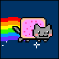

Hi, welcome to my GitHub hosted website. Hopefully you've reached this website in search for your next employee or partner, me. If your interests are different though be welcome to explore my opinions, projects and anything else I publish in these pages. You will find my contact information here.
The reason I elected to create a website is 2-fold. First of all I wanted to have a unique portal to showcase myself for career purposes, and the other reason is more of a passion of mine for IT related topics, I felt it would be an interesting project to get some of my ideas, thoughts and information out there into the web while actually practicing development in HTML and then some more.
On the Me Professional section you will get the most relevant information on my skills, interests and background all of which might make me an ideal candidate for your organisation or project. (Work in Progress)
Over at Me Casual section I have shared some of the most interesting ideas, passions and things, that in my opinion, have shaped who I am today. I hope that you find the information I am sharing as captivating as I do. (Work in Progress)
Lastly I am working to implement a blog section in this webpage and start updating through that, so if you're interested check back every once in a while. The only possibility of follow up at the moment is through github.com/patrik-eskelinen and following my pages repository which will keep you up-to-date on ANY changes at all I decide to commit, but eventually I should be able to have an RSS feed running.
